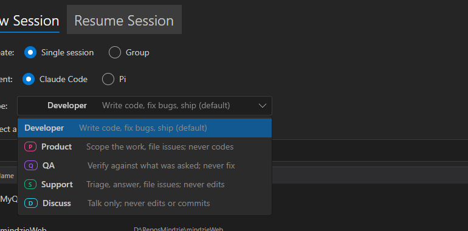
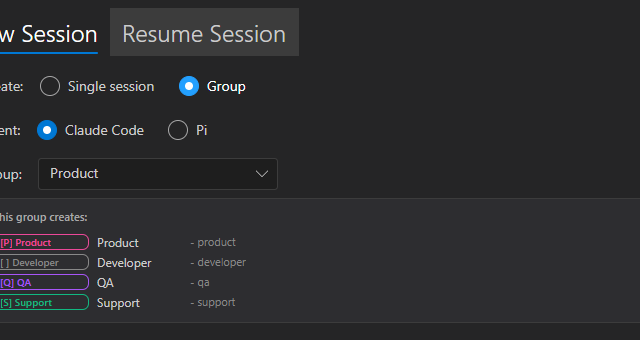
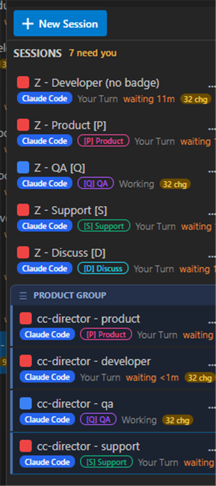
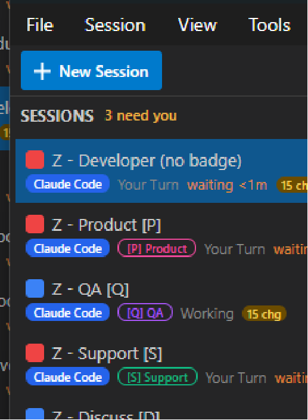

feat/issue-254-new-session-dialog · CenCon Development Method ·
Result: ALL ACCEPTANCE CRITERIA MET
Create: radio pairs became a Single session | Group toggle.
Single mode shows a Type dropdown (badge chip + one-line role); Group mode shows a Group dropdown
+ a preview card of the member sessions. (NewSessionDialog.axaml + .axaml.cs)Implement renamed to Developer (int 0), BugReport
renamed to Product (int 2), new Support (int 5); IssueSubmitter (int 3) kept but
hidden from the picker. (SessionType.cs)JsonStringEnumConverter with a custom
SessionTypeJsonConverter + SessionTypeNames.TryParse that read the legacy names
(Implement/BugReport) as aliases, so every session persisted before the rename still
loads. (Assumption 1 confirmed real: the type persists by string name.)- product/-developer/-qa/-support suffixes. (SessionGroupDefinition.cs)[P] magenta, QA [Q] violet, Support [S]
emerald, Discuss [D] cyan; Developer no badge. (SessionViewModel.cs)ControlEndpoints and GatewayTurnBriefAgent route type
parsing through the alias-aware SessionTypeNames.TryParse.| # | Criterion | Result / proof |
|---|---|---|
| AC1 | Single mode uses a Type dropdown of the five types | PASS Live dialog, dropdown open showing Developer / Product / QA / Support / Discuss (Fig 1). |
| AC2 | Group mode shows a group dropdown + 4-member preview | PASS Live dialog Group mode, "This group creates:" card lists Product, Developer, QA, Support (Fig 2). |
| AC3 | Product group creates exactly 4 grouped sessions, fixed order, adjacent | PASS Created live on cc-director; all 4 share groupId
20acf36e-..., named cc-director - product/developer/qa/support, rendered under one
PRODUCT GROUP bracket (Fig 3). |
| AC4 | Badges render per type | PASS One session of each type: Developer = no badge, Product [P]
magenta, QA [Q] violet, Support [S] emerald, Discuss [D] cyan (Fig 4). |
| AC5 | Support behavior seeded (triage / answer / file, never fix) | PASS Unit test Playbook_Support_TriageAnswerFile_NeverEdits_Issue254
asserts the playbook text; a live Support session was created (Fig 4). |
| AC6 | Every old session still loads after the rename | PASS Tests PersistedSession_LegacyTypeName_StillDeserializes
(Implement->Developer, BugReport->Product, IssueSubmitter still loads) and
SessionTypeNames_TryParse_AcceptsCanonicalAndLegacy deserialize stored JSON of each old value. |
| AC7 | IssueSubmitter removed from the picker | PASS Not in the Type dropdown (Fig 1) nor the group preview (Fig 2); enum
value retained but hidden. Test ProductGroup_HasNoIssueSubmitter_DroppedIn254. |
| AC8 | Builds clean, SessionTypeTests pass | PASS dotnet build on the changed projects: 0 warnings, 0 errors.
43/43 tests in the change's blast radius pass (SessionTypeTests + GroupReorderTests + TurnBriefTests). |

Single mode. The dropdown lists exactly Developer, Product, QA, Support, Discuss - each with badge chip + one-line role.

Group radio selected; the Product group dropdown + "This group creates:" card shows the four members in fixed order.

Created live on cc-director. PRODUCT GROUP bracket holds product -> developer -> qa -> support, all one groupId.

Developer (no badge), Product [P] magenta, QA [Q] violet, Support [S] emerald, Discuss [D] cyan.
No architecture or security drift. The change adds no external surface, secret, or network path - it renames/extends
an enum and redesigns one desktop dialog inside the existing core_services and avalonia_ui
containers. No docs/cencon/ file required updating; architecture_manifest.yaml and
security_profile.yaml remain current (both dated 2026-06-09). No blocking security rule (DT-01..DT-NN)
is touched.
cc-director5.exe) and launched it via the cc-director-launch
scheduled task (clean parentage, CLAUDE.md rule 0b).127.0.0.1:7886) to create one session of each type, and via
UI Automation to open the dialog, the Type dropdown, switch to Group mode, and create the Product group on
cc-director.cc-director5.exe (path-confirmed).